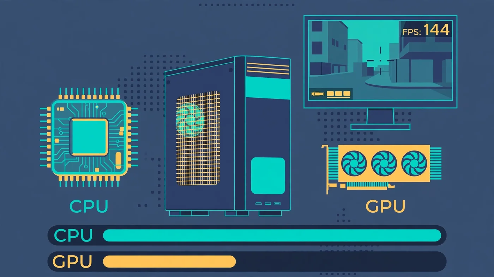

Valorant Bottleneck: Is Your CPU or GPU Limiting Your FPS?
The short answer to the Valorant bottleneck question is that it is almost always the CPU. Valorant was designed to run on nearly any graphics card, so the GPU finishes each frame quickly and then waits — while the processor works through player positions, hit registration and the 128-tick server updates that decide every duel. If your FPS stalls, dips in fights or never climbs as high as your graphics card suggests it should, the limit is usually your processor, your RAM, or something stealing CPU time in the background. This guide shows how to prove which part is holding you back, and what actually fixes it.

Valorant Bottleneck: The Short Answer
A Valorant bottleneck is whichever part of your PC cannot keep up with the game's frame rate — and in this game that part is the CPU far more often than the GPU. Valorant's renderer is deliberately lightweight: Riot built it so the game could run on a decade-old integrated GPU, and the engine still targets that same broad compatibility. Because the graphics work is so light, even a modest dedicated card renders each frame in a few milliseconds and then sits idle, waiting for the processor to prepare the next one.
That is the opposite of most modern games, where the graphics card is usually the limit. In Valorant, the frame ceiling follows the processor: its single-core speed, how fast your RAM feeds it, and how much CPU time is left after Windows, Vanguard and background apps take their share. Our CPU vs GPU bottleneck guide explains the same read-the-usage-bars logic for games in general, and Valorant is the clearest example of it.
Why Valorant Is a CPU-Bound Game
Three design choices make Valorant CPU-bound. First, the visuals are light on purpose: small enclosed maps, no ray tracing and no dense open world, and Riot deliberately made low and high graphics settings give no competitive advantage. Second, the game simulates a lot on the processor: five players per side, agent abilities, projectiles, hitboxes and the 128-tick server updates all run through the CPU every frame. Third, competitive play demands very high frame rates — 144, 240 or even 360 FPS on high-refresh monitors — and at those frame rates the processor has only a few milliseconds per frame to do all of that work.
The official system requirements tell the same story. Riot publishes three tiers — minimum for 30 FPS, recommended for 60 FPS and high-end for 144 FPS — and the high-end graphics card on that list is a GTX 1050 Ti, a card from several generations ago. Since patch 11.02 in July 2025 the game runs on Unreal Engine 5, which added heavier effects and maps, but the balance did not change — the processor still decides the frame rate. The closest comparison is our CS2 bottleneck guide: CS2 is also CPU-heavy, but Valorant leans even harder on the processor, because its renderer is lighter still.
How to Tell If Your Valorant Bottleneck Is the CPU or the GPU
Do not guess — Valorant has the diagnostic built in. Open Settings, then Video, then Stats, and turn on Client FPS, CPU Frame Time and GPU Frame Time. Play a deathmatch or a few rounds, especially an ability-heavy fight, and watch the two frame-time numbers: the higher number is your bottleneck.
- CPU frame time clearly higher than GPU frame time: you are CPU-bound. Lowering graphics settings will barely help — the fix is background cleanup, faster RAM, or a faster processor.
- GPU frame time clearly higher than CPU frame time: you are GPU-bound. This usually means weak integrated graphics, a very old card, or high resolution and settings. Lower the graphics settings first.
- Both frame times low but FPS still capped: check for a frame limiter — Valorant's own "Limit FPS Always" setting, VSync, or a driver-level cap.
Confirm the reading with Task Manager on Windows: open the Performance tab while playing and watch CPU and GPU usage together. The classic Valorant bottleneck pattern is a busy CPU with a GPU sitting well below full load. Our bottleneck check guide walks through the same test in more detail, and our frame time guide explains why frame time, not just the FPS counter, is the number to trust.
What a CPU Bottleneck Looks Like in Valorant
A CPU bottleneck in Valorant has a recognisable shape. Average FPS may look fine in the practice range, then collapse the moment a real fight starts — a Viper wall, an Omen smoke and a Brimstone ultimate landing at once is the worst case, because every ability adds simulation work for the processor. The FPS counter swings up and down instead of holding steady, and the game feels inconsistent: your aim feels right one round and late the next.
The number that matters here is the 1% low, not the average. Duels in Valorant are decided in fractions of a second, so a system that averages high FPS but dips sharply when abilities stack up will show you the enemy a frame later than a steadier system. That is why a dip matters more than the headline number — and why the fix is usually CPU or RAM, not graphics settings. Our stuttering and 1% lows guide explains how to read those dips and what causes them. The confirming sign: FPS barely changes when you drop the graphics settings from high to low. If lowering resolution and every setting changes almost nothing, the graphics card was never the limit.
When the GPU Is the Limit in Valorant
The GPU does become the limit in a few situations: integrated graphics or a very old, weak card — Riot's minimum specification is a decade-old integrated GPU for 30 FPS — and high resolutions, where 4K or 1440p with the settings turned up finally gives the GPU enough pixels to chew on. The test is the same as before, in reverse: if GPU frame time is higher than CPU frame time, or GPU usage sits near full load while the CPU waits, the graphics card is the limit — and this time lowering settings does help. Raising the resolution or the graphics quality also shifts load toward the GPU, which is a useful trick in the other direction: if you are CPU-bound and want a prettier game, turning settings up costs almost nothing, because the GPU has spare capacity. Our low GPU usage guide covers the same pattern from the other side: a GPU waiting at low usage is a symptom, not the problem.
RAM: The Hidden Valorant Bottleneck
RAM is the bottleneck Valorant players overlook most, because it hides behind the CPU. In a CPU-bound game the processor is only as fast as the memory feeding it, so slow RAM or a single memory stick can cap your frame rate just as surely as a slow processor. A single stick halves the memory bandwidth the CPU can use, and RAM running at its slow default speed instead of its rated speed does the same thing in a quieter way.
Two checks cost nothing. First, make sure you have two matched sticks running in dual-channel mode — our single vs dual channel guide explains the check. Second, make sure XMP on Intel or EXPO on AMD is enabled in the BIOS, so the RAM actually runs at the speed printed on the box; our XMP/EXPO guide walks through it. Riot lists 4GB of RAM in its official requirements, but that is a minimum for launching the game — in practice, 16GB is the sensible baseline for playing with a browser and voice chat open alongside it. Our RAM bottleneck guide covers capacity and speed checks in full.
Settings That Actually Raise FPS in Valorant
Because Valorant is CPU-bound, most graphics settings matter less here than in other games — but a few do help, and two in particular should never be set wrong:
- Multithreaded Rendering: keep it ON. This splits the rendering work across CPU cores, and turning it off can halve FPS on modern processors. It is the single most important setting in the menu.
- Material Quality and Detail Quality: Low. These are the heaviest graphics options, and the game is designed so low settings give no visibility disadvantage.
- NVIDIA Reflex Low Latency: On, or On + Boost. Reflex synchronises the CPU and GPU render pipeline to cut system latency — the time between your click and the game registering it.
- Limit FPS Always: Off, or just above your monitor's refresh rate. An uncapped frame rate reduces input lag even above your refresh rate.
- VSync: Off. VSync adds latency and caps the frame rate to the monitor. In a game where responsiveness is everything, it costs more than it gives.
- Fullscreen, not windowed. Fullscreen gives the game exclusive access to the display and avoids the extra work of the desktop compositor.
One thing Valorant does not have is upscaling: there is no DLSS, FSR or XeSS option in the game, and no console or launch options to tweak. The settings menu is the whole toolkit, which is another reason the hardware underneath it matters so much. Our Windows settings guide covers the operating-system side of the same job.
Windows, Vanguard and Background Apps That Steal CPU Time
In a CPU-bound game, everything running in the background is a direct tax on your frame rate. The biggest one is built into Valorant itself: Vanguard, Riot's anti-cheat, is a kernel-level driver that starts with Windows and runs constantly, even when you are not playing. It is not optional — the game will not launch without it — but it is a reason to keep everything else quiet.
Work through these before spending money: close the browser, especially with many tabs open, and close Discord's overlay if you do not need it; set the Windows power plan to High Performance so the CPU stops parking cores; check that Windows Game Mode is on; and update the GPU driver. Then check temperatures: a processor that overheats slows itself down, and a session that starts fast and gets slower over twenty minutes is the classic sign. A dusty cooler or dried thermal paste can look exactly like a CPU bottleneck.
On Windows 11, two more requirements come from Vanguard itself: TPM 2.0 and UEFI Secure Boot must be enabled, or the game will not launch at all. If you have just moved to Windows 11 and the game refuses to start, check those BIOS settings before blaming your hardware. Our Fortnite bottleneck guide covers the same background-app cleanup from the battle-royale side, and the steps are identical.
Fixing a CPU Bottleneck vs a GPU Bottleneck: What to Upgrade
Upgrade only the part your test named. If the built-in stats say CPU-bound, the upgrade order is: a processor with stronger single-core speed first, then faster RAM, then more RAM. Six strong cores beat many slower ones in Valorant, because the game's heaviest work does not split evenly across cores — and processors with a large cache, such as AMD's X3D chips, are popular with Valorant players precisely because they hold frame rates steady in ability-heavy fights. Our best GPU for Ryzen 7 7800X3D guide covers the pairing side of that chip.
If the test says GPU-bound instead, a faster graphics card is the right buy — but check the cheap fixes first: the graphics settings, the resolution, and whether the card is actually running at full load. A card that is not at full load is not the limit, no matter how old it is.
Run the pairing through the PC Bottleneck Calculator at the resolution you actually play at, and plan the rest with our PC upgrade checklist before you spend. A part bought for the wrong bottleneck is money that fixes nothing.
Free PC Bottleneck Calculator — Estimate CPU and GPU balance for your resolution and workload: check whether your CPU, GPU or RAM is the slow half of your Valorant setup on the PC Bottleneck Calculator (see its methodology page) before you buy a part for higher FPS.
Conclusion
A Valorant bottleneck is, for most players, a CPU bottleneck. Riot built the game to run on almost any graphics card, so the GPU finishes its work quickly and waits while the processor handles the simulation, the hit registration and the 128-tick updates — and at the high frame rates competitive play demands, the processor is the part with the least time to spare. The built-in stats name the limit in a minute: if CPU frame time is higher than GPU frame time, fix the processor, the RAM or the background load, not the graphics card.
Frequently Asked Questions
Is Valorant CPU or GPU intensive?
Valorant is CPU intensive. Riot designed it to run on almost any graphics card, so the GPU finishes its work quickly and the processor becomes the limit. What matters most is single-core CPU speed and fast RAM, because the CPU calculates player positions, hit registration and the 128-tick server updates. The GPU only becomes the limit on very weak integrated graphics, at high resolutions, or with the graphics settings turned all the way up.
Why is my FPS low in Valorant with a good PC?
A good graphics card does not guarantee high FPS in Valorant, because the game is CPU-bound. The usual culprits are a processor with weak single-core speed, RAM running in single-channel mode or with XMP/EXPO switched off, background apps and overlays stealing CPU time, or Vanguard and Windows services competing with the game. Check the built-in stats under Settings, then Video, then Stats: if CPU frame time is clearly higher than GPU frame time, your processor is the limit, not your graphics card.
Why is my GPU usage so low in Valorant?
Low GPU usage in Valorant is normal and usually a good sign. The game is so light on graphics that even a mid-range card finishes each frame quickly and waits for the CPU to prepare the next one. A GPU sitting well below full load while the CPU is busy means the processor is the bottleneck — a faster graphics card would not raise your FPS. Only worry if GPU usage is low and the CPU is also idle, which points to a frame cap, a power or thermal limit, or a background problem.
Does Valorant need a good GPU?
No. Riot's own high-end specification for 144 FPS lists a GTX 1050 Ti, a graphics card from several generations ago, because the game's renderer is deliberately lightweight. Any dedicated graphics card from the last few years is more than Valorant needs at 1080p on competitive settings. Spend the GPU budget on a faster CPU or faster RAM instead — those are the parts that actually raise the frame ceiling in this game.
How much FPS should I get in Valorant?
It depends on your hardware and your monitor. On a 60Hz screen, a steady 60 FPS is all you can see. On a 144Hz monitor, aim for a stable 144 FPS or more, and on a 240Hz monitor, competitive players aim for 240 FPS or above. What matters more than the average is the 1% low: a system that averages high FPS but dips sharply during ability-heavy fights will feel worse than a slightly slower system that holds steady. If your 1% lows collapse in fights, your CPU or RAM is the limit to fix first.
Sources
Official documentation referenced in this guide:
- Riot Games: Minimum & Recommended PC Specs for VALORANT (minimum 30 FPS, recommended 60 FPS and high-end 144 FPS tiers, RAM, VRAM and Windows requirements)
- NVIDIA: Reflex Low Latency Mode (synchronising the CPU and GPU render pipeline to reduce system latency)
- Intel: Locate and Resolve CPU-GPU Bottlenecks (per-core CPU usage vs GPU usage patterns)